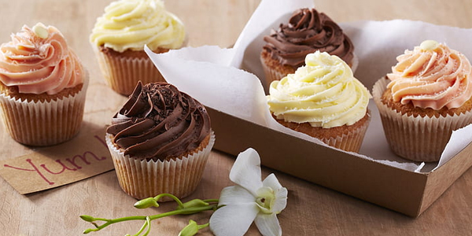
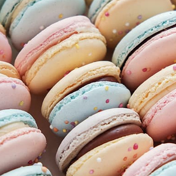
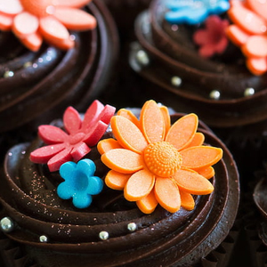
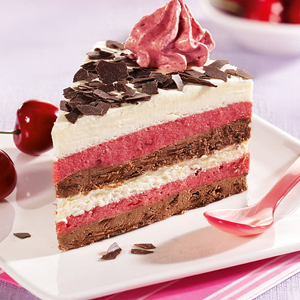
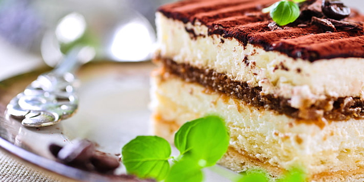

Camilo, un hombre de 58 años, disfruta de una vida plena como padre
de tres hijos y esposo de Julieta. Residen en Cerrillos, donde Camilo
ha encontrado su pasión y felicidad como pastelero en una panadería local.
Aunque estudió contabilidad, siempre soñó con crear pasteles profesionales
y deleitar a las personas con sus creaciones.
Con siete años de experiencia en su actual empleo,
Camilo ha encontrado un entorno donde puede desarrollar su talento y
dedicarse a su verdadera pasión. A pesar de tener una formación académica
en otro campo, está decidido a seguir su vocación en la pastelería y ha comenzado a
estudiar diferentes cursos para perfeccionar sus habilidades en la creación de postres exquisitos.
Su objetivo principal es abrir su propia pastelería. Camilo sueña con ofrecer a la comunidad un
lugar donde puedan disfrutar de pasteles y postres únicos, elaborados con amor y precisión. Está decidido
a mejorar constantemente sus productos, perfeccionando técnicas y experimentando con nuevas recetas, para brindar
experiencias culinarias inolvidables a sus futuros clientes.
Aunque su camino no ha sido convencional, Camilo encuentra satisfacción en su trabajo actual y
valora cada oportunidad para aprender y crecer como pastelero. Su dedicación y perseverancia reflejan su
determinación y pasión por convertir su sueño en realidad.
La historia de Camilo es un recordatorio de que seguir una pasión y perseguir los sueños puede
conducir a la felicidad y realización personal. Su valentía para seguir su corazón y buscar su
verdadera vocación es un ejemplo inspirador para aquellos que anhelan hacer lo que aman. Con cada
pastel que hornea, Camilo se acerca un paso más a su objetivo de tener su propia pastelería y brindar
alegría a través de sus dulces creaciones.

Grupo Cero
Copyrigth - All rights reserved 2022